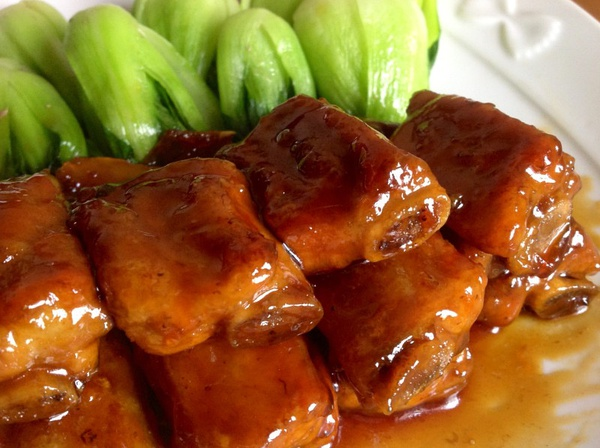
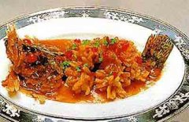
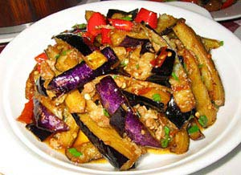
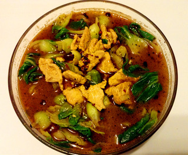
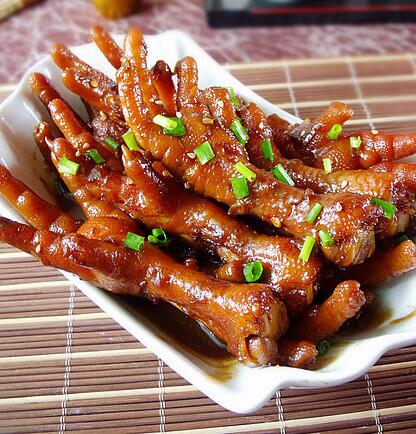
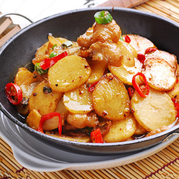
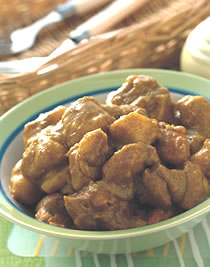

糖醋排骨
主料：小排，油麦菜
配料：桂皮，大料，香叶，姜片，白糖，生抽，白醋，盐，鸡粉，料酒
做法:
1、锅内放水放桂皮、大料、香料、料酒、适量盐，放入小排焖煮30分钟。
2、小排出锅后晾凉，油麦菜过水汆熟。
3、另起锅，热锅下油，下糖，开小火炒糖色，接着放入姜片。
4、锅里有姜糖味后放入小排，快速翻炒，放入生抽、料酒、少许盐。
5、小火焖五分钟后下白醋，翻炒均匀后出锅，摆盘。

松鼠桂鱼
材料：桂鱼，干淀粉，番茄酱，鲜汤，糖，香醋，酒，盐，蒜瓣末，笋丁，香菇，豌豆，猪油，虾仁，麻油
做法：
1、桂鱼去鳞及鳃，剖腹去内脏洗净，鱼皮朝下在鱼肉上先直剞，再斜剞，深至鱼皮成菱形刀纹用绍酒，精盐调匀，抹在鱼头和鱼肉上，再滚上干淀粉，用手拎鱼尾抖去余粉。
2、将番茄放入碗内加鲜汤、糖、香醋、酒、盐、湿淀粉拌成调味汁。
3、炒锅用大火烧热下猪油，烧至八成热时，先将两片鱼肉翻卷，翅起鱼尾，放入油锅稍炸使其成形，再将鱼全部放入油锅炸，至金黄色捞起，放入盘中，装上鱼头拼成松鼠形。
4、锅内留油少许，放葱段煸香捞出加蒜瓣末、笋丁、香菇丁、豌豆炒熟，下调味汁用大火烧浓后，放猪油和虾仁拌和，淋上麻油，起锅浇在鱼身上即成。

肉末茄子
主料：茄子500克，肉馅50克，大蒜2瓣，姜2片，葱、红辣椒各1根。
调味料：豆瓣酱1大匙,盐、糖各半小匙，酱油1小匙,香油小半匙。
做法:
1、材料除肉馅外全部洗净。
2、茄子去头、尾，切3厘米长段。
3、姜、大蒜去皮并切末，葱切花，红辣椒切薄片。
4、锅中倒入1杯油烧热，放入茄子炸软，捞出。
5、锅中留1大匙油烧热，放入A料和姜、大蒜、葱炒香，加入肉馅炒熟。
6、再加入B料和茄子炒匀，盛起前加入红辣椒片、淋上C料即可端出。

水煮肉片
材料：猪瘦肉(适量)，小白菜(适量)，鸡蛋(适量)，麻辣烫油料(适量)，花椒(适量)，6月香豆瓣酱(适量)，食用油(适量)
做法:
1、把切好的瘦猪肉放进一只碗里，加淀粉、盐、鸡蛋、料酒抓匀，腌制20分钟。
2、把小白菜洗净焯水，把小白菜放在一只大玻璃碗里。
3、锅里放油烧热，下入腌好的肉片。
4、翻炒肉片变色成出备用。
5、锅中留底油，爆香花椒，下入6月香豆瓣炒出香味后，倒入麻辣烫油。
6、加入适量高汤或者清水，放适量盐，烧开。
7、把肉片滑入锅中的水中，拨散开稍煮。
8、最后全部倒在刚才的菜上面，在肉片上撒上比较大量的花椒和干辣椒即可。

红烧鸡爪
材料：鸡爪750g、花椒一小把、八角两个、桂皮两小片、香叶两小片、冰糖10g、料酒一汤匙、老抽三汤匙、生抽两汤匙、十三香半茶匙、本味锦凤调味品2滴、姜两片。
做法：
1、准备好食材和各种香料鸡爪冲洗干净后，逐个减去指甲。（个人卫生还是要搞的哈，剪掉指甲吃起来感觉更好）锅里放半锅清水。
2、倒入鸡爪，大火煮开后继续煮三分钟，把鸡爪捞出用流动的水冲洗干净，沥干。
3、鸡爪倒入锅中，放清水大致盖过鸡爪。煮开后，加一汤匙料酒，加入两片姜，加入三汤匙老抽和两汤匙生抽。
4、把花椒、八角、桂皮、香叶全部装入茶包袋，放入锅中。（没有茶包袋就直接放入锅中）放入冰糖，加入半茶匙十三香和本味锦凤2滴。
5、再次煮开后转小火大约80分钟，至鸡爪酥烂入味，转大火收浓锅中汤汁即可。

干锅土豆片
主料：土豆半斤、五花肉2两。
辅料：郫县豆瓣酱、葱、姜、酱油、干红辣椒、味精、盐、油。
做法：
1、土豆洗净，切成片状，用清水泡洗几次，泡掉土豆里的淀粉；
2、猪肉切成薄片，葱切段，姜切片，干红辣椒切碎待用；
3、炸土豆，把锅预热，加油，油烧热后，把土豆片放入炸，把土豆两面炸成黄色，装盘待用；
4、前面切好的肉片放入第三步的锅内，翻炒一会，放入干红辣椒、郫县豆瓣酱、葱、姜翻炒，至猪肉变色；
5、加入前面炸好的土豆片，翻炒，加入酱油，盐，味精，翻炒一会后，喷入一点水；
6、中火烧开，待汤基本上干了的时候，起锅即可。

咖喱鸡
材料：鸡1/2只，马铃薯2个，红萝卜1条，洋葱1/2个，水5杯，咖哩块1/2盒，糖1大匙
做法：
1.鸡洗净切块备用。
2.马铃薯、红萝卜去皮洗净切块，洋葱去皮洗净切丁。
3.热油锅放入洋葱丁爆香，放入鸡块翻炒至外表熟。
4.放入马铃薯块、红萝卜块一起炒。
5.加入5杯水，用大火煮滚。
6.加入糖，转小火煮至鸡肉熟透。
7.熄火，加入咖哩块搅拌溶解至汤汁变浓稠即成。